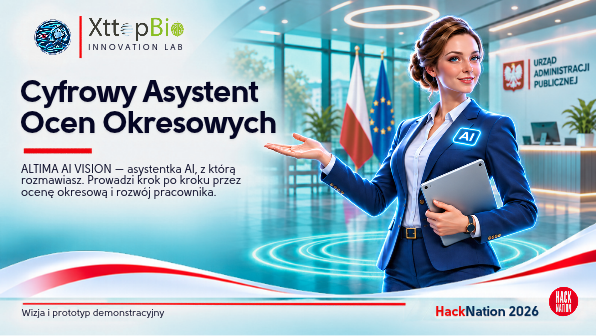
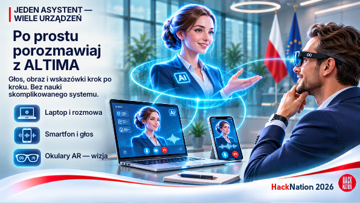
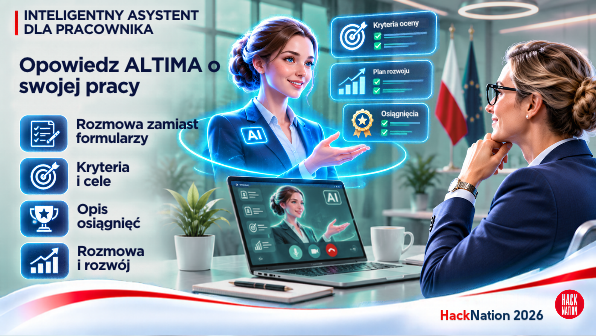
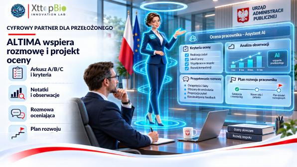
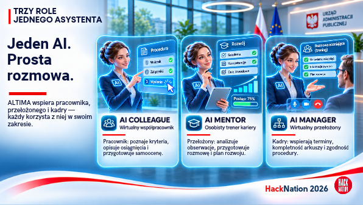
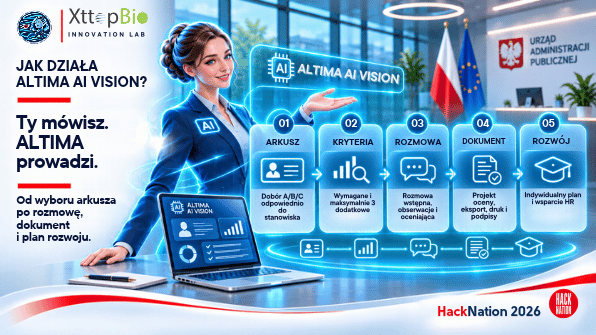
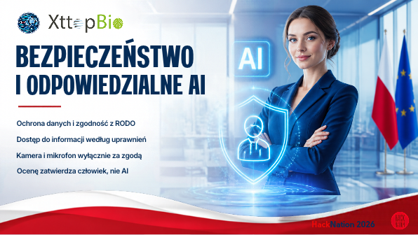
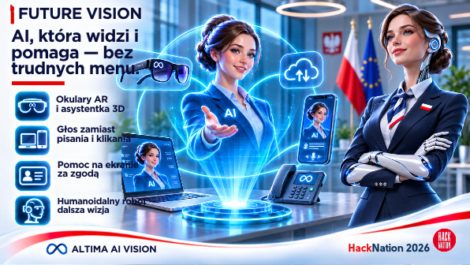
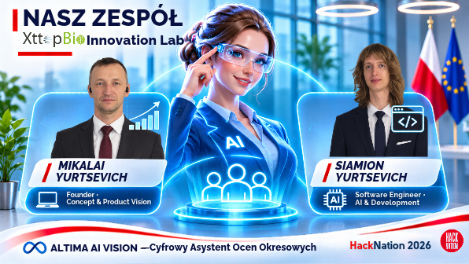

Wsparcie bez nauki systemu
Wyjaśnia kryteria, pomaga opisać osiągnięcia i przygotować rozmowę.
ALTIMA AI VISION to wirtualna asystentka AI, która wyjaśnia procedury, wspiera ocenę okresową i rozwój zawodowy. Głos i proste wskazówki zamiast kolejnego skomplikowanego interfejsu.

ALTIMA pomaga pracownikowi, przełożonemu i kadrom. W każdym przypadku prowadzi użytkownika przez kolejne zadania.
Wyjaśnia kryteria, pomaga opisać osiągnięcia i przygotować rozmowę.

Pomaga uporządkować obserwacje, kryteria i konstruktywny feedback.
Ułatwia kontrolę terminów, kompletności dokumentów i zgodności procedury.
Jeden inteligentny asystent, który wyjaśnia, pokazuje i pomaga. Poniżej znajdziesz wszystkie 11 slajdów naszej prezentacji — z oryginalnymi ilustracjami i treścią dostosowaną do strony.

01 / 11ALTIMA AI VISION — asystentka AI, z którą rozmawiasz. Prowadzi krok po kroku przez ocenę i rozwój zawodowy.

02 / 11Laptop, smartfon i głos. W przyszłości także okulary AR: mniej instrukcji, więcej bezpośredniego kontaktu z ALTIMA.
Arkusze A/B/C, kryteria, obserwacje, rozmowy i dokumentacja nie powinny wymagać nauki kolejnego skomplikowanego systemu.

04 / 11Pracownik może opowiedzieć o osiągnięciach, zrozumieć kryteria, przygotować samoocenę i omówić plan rozwoju.

05 / 11Wspiera dobór kryteriów, porządkowanie obserwacji, przygotowanie rozmowy oraz projektu oceny i planu rozwoju.

06 / 11Pracownik, przełożony i kadry korzystają z tego samego AI, ale z innym zakresem uprawnień i wsparcia.

07 / 11Ty mówisz — ALTIMA prowadzi. Arkusz A/B/C, kryteria (maksymalnie trzy dodatkowe), rozmowy, projekt dokumentu i rozwój.

08 / 11Dostęp do danych zależny od uprawnień, kamera i mikrofon pod kontrolą użytkownika. Ostatecznej oceny dokonuje człowiek.
Obecnie: interfejs, wizualny awatar, dialog demonstracyjny, podsumowanie i eksport TXT. Pełne formularze i HR to kierunek dalszego rozwoju.

10 / 11Głos zamiast pisania, okulary AR i asystentka 3D z dostępem do ekranu wyłącznie za zgodą użytkownika. Robot humanoidalny to wizja przyszłości.

11 / 11Xttopbio Innovation Lab — Mikalai Yurtsevich (Concept & Product Vision) i Siamion Yurtsevich (Software Engineer • AI & Development), zgodnie ze wskazaną prezentacją.
Przeglądaj wszystkie strony i oryginalne wizualizacje bez opuszczania serwisu.
Jeśli prezentacja nie wyświetla się w ramce, otwórz ją bezpośrednio w Canva.
ALTIMA ma prowadzić przez rzeczywisty proces oceny okresowej. Technologia upraszcza działania, lecz nie zastępuje oceniającego i nie podejmuje decyzji kadrowych.
Obecna strona jest prototypem demonstracyjnym. Pełne arkusze, kontrola uprawnień i integracje urzędowe wymagają dalszej implementacji i walidacji prawnej.
Ostatni slajd prezentacji przedstawia zespół projektu. Oryginalną grafikę zespołu znajdziesz w galerii powyżej.
Rozwiązanie rozwija koncepcję z prezentacji Canva: AI prowadzi użytkownika przez procedury, a nie odwrotnie.
Pomaga przygotować samoocenę, uporządkować osiągnięcia i wyjaśniać kryteria oceny.
Porządkuje informacje o wynikach, sugeruje pytania i pomaga budować plan rozwoju.
W przyszłości ALTIMA będzie mogła wskazywać kolejne działania bezpośrednio w polu widzenia, po wyrażeniu zgody na dostęp do obrazu.
Docelowo: arkusze A/B/C, kryteria, obserwacje, terminy i projekt oceny do zatwierdzenia przez człowieka.
W tej sekcji wykorzystana jest ta sama asystentka, którą pokazaliśmy na slajdach. Przeciągnij myszą albo użyj suwaka, aby zobaczyć różne ujęcia postaci, w tym widok z tyłu. To wielokadrowy podgląd 360°, a nie pełny model 3D.

Niżej zostawiamy funkcjonalną część serwisu: rozmowę z asystentką, szybkie podpowiedzi i projekt podsumowania oceny okresowej.

Tutaj pojawi się projekt podsumowania. Końcowej oceny zawsze dokonuje człowiek.
Z tego serwisu możesz przejść bezpośrednio do projektu sportowego ALTIMA ML VISION. Oba projekty pozostają osobne, ale są częścią jednej linii rozwoju AI‑asystentów.
Otwórz ALTIMA ML VISION ↗